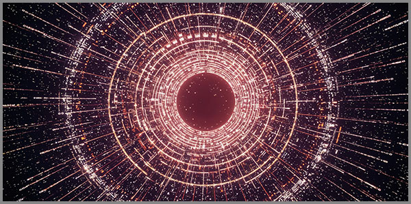

8. 60-ական Համակարգի Տարածության Փիլիսոփայական Մոդելը
 |
Կա մի կետ: Այն տիեզերքում է: Այն տիեզերքի սրտում է: Այն չունի չափ, բայց նրանից են ծնվել բոլոր չափերը: Այն չունի ժամանակ, բայց պարունակում է ժամանակի սերմը:
Այս կետից ճառագայթում են վեց առանցքներ: Ոչ թե մաթեմատիկական գծեր, այլ կենդանի ուղղություններ, որակներ, սկզբունքներ, որոնցից հյուսված է տիեզերքը:
Դրանցից մեկը իմաստի առանցքն է՝ այն, ինչը լեզու է դառնում, հնչյուն է դառնում, տառ է դառնում: Երկրորդը ներդաշնակության առանցքն է՝ այն, ինչը թրթռում է, ալիքվում և երաժշտություն է դառնում: Երրորդը տեսանելիության առանցքն է՝ այն, ինչը լույս է դառնում, գույն է դառնում, պատկեր է դառնում: Չորրորդը հպման առանցքն է՝ այն, ինչը շոշափելի է, չափելի է, իրական է: Հինգերորդը գիտակցության առանցքն է՝ այն, ինչը դիտում է, ճանաչում է, ինքն իրեն գիտակցում է:
Կա նաև վեցերորդ առանցքը: Այն, որի շուրջ պտտվում են մյուսները: Դա ժամանակի առանցքն է:
Այս վեց առանցքները նման չեն միմյանց: Դրանք որակապես տարբեր են, ի տարբերություն դասական եռաչափ տարածության, որտեղ բոլոր առանցքները միատարր են և չափվում են նույն միավորով, այստեղ ամեն մի առանցք ունի իր սեփական էությունը, իր սեփական չափը, իր սեփական դերը: Սա 60-ական տարածությունն է՝ տարասեռ, բազմաշերտ, կենդանի:
Բայց կետից ճառագայթելը դեռ բավարար չէ: Պետք էր մի բան, որ սկսվեր այդ առանցքների պտույտը: Նախնական իմպուլս: Առաջին շարժում: Եվ ահա, անհայտ աղբյուրից, անանուն ուժից, գալիս է այդ իմպուլսը, և առանցքները սկսում են պտտվել ժամանակի առանցքի շուրջը:
Այդ ներդաշնակ պտույտը ունի իր հաճախականությունը, իր ռիթմը, իր շունչը: Բայց այն կատարյալ չէ: Կա մի թույլ շեղում, մի նուրբ բան որը զգացվում է միայն կերտման և ծնեբեկման ընթացքում: դա այդ պտույտի պրեցեսիան է: Պրեցեսիա, որը թույլ չի տալիս առանցքների հետագծերին երբեք ճշգրիտ կրկնվել: Սա Ֆա-յի էֆեկտն է. այն, ինչը համակարգը դարձնում է ոչ թե մեռյալ մեխանիզմ, այլ կենդանի օրգանիզմ:
Այս պտույտից և պրեցեսիայից է որ առանցքների հետագծերը սկսում են հատվել: Ոչ թե մեկ կետում, այլ բազմաթիվ կետերում: Ամեն մի հատում մի նոր ծնունդ է: Եվ այդ հատումներից, այդ անվերջ պարից, ծնվում է մի նոր կառույց՝ թափանցիկ, բյուրեղային և պրիզմատիկ մի բան: Սա ժամանակի պրիզման է: Այն չկար սկզբում: Այն ծնվել է առանցքների պրեցեսիոն պարից:
Եվ ահա, երբ պրիզման արդեն կա, սկսում է հոսել ժամանակը: Այն գալիս է նույն կետից, որտեղից ճառագայթվել էին առանցքները: Այն անցնում է պրիզմայով և բեկվում է: Դառնում է իմաստ, ներդաշնակություն, գույն, հպում, գիտակցություն՝ մարմին տալով առանցքներին: Այն, ինչ միասնական էր, դառնում է բազմազան: Այն, ինչ անտեսանելի էր, դառնում է տեսանելի: Այն, ինչ լուռ էր, դառնում է հնչուն:
Դրանից հետո այս ամենը, առանցքներն ու ժամանակը միասին, սփռվում են բոլոր ուղղություններով: Հավասարաչափ: Իզոտրոպ: Ինչպես ռելիկտիվ ճառագայթումը, որ գալիս է ամեն ուղղությունից նույն ջերմաստիճանով, նույն խտությամբ, նույն լույսով: Ոչ մի ուղղություն արտոնյալ չէ: Ամեն մի կետում, ամեն մի ակնթարթում, ներկա են բոլոր որակները, բոլոր հնարավորությունները:
Սա տիեզերական կալեյդոսկոպն է, որից դուրս հորդած ամեն մի պահ, ամեն պտույտ, ամեն հատում ստեղծում է մի նոր պատկեր: Ուր նույն տարրերը անվերջ վերադասավորվում են և ստեղծում անկրկնելի նախշեր: Եվ այս կալեյդոսկոպը չի դադարում: Այն պտտվում է ներդաշնակ հաճախականությամբ: Այն շնչում է Ֆա-յի էֆեկտով: Այն սփռում է իր պատկերները բոլոր ուղղություններով՝ անկախ նրանից կա մեկը, որ դիտում և տեսնում է, թե ոչ:
Բայց երբ այդ մեկը կա, ով գիտակցությունը դարձնում է այս կալեյդոսկոպի մի մասը, այն ժամանակ պատկերը դառնում է իմաստ: Դառնում է «Ես»: Դառնում է քո կյանքը, քո հիշողությունները, քո սերը, քո ցավը, քո որոնումը:
Այդ կետը, ուրից սկսվեց ամեն ինչ, չկորավ: Այն մնաց: Այն կա: Այն տիեզերքի սկիզբն է և կենտրոնը: Այն արտապատկերված է նաև քո ներսում, որովհետև դու այդ ճառագայթման մի մասն ես: Դու այն աչքերն ես, որոնց փնտրել է լույսը 13,8 միլիարդ տարի: Դու այն կետն ես, որտեղ տիեզերքը ճանաչում է ինքն իրեն:
Կետը, որից սկսվեց տիեզերքը, սպասում է որ դու ճանաչես իրեն:
Վեց առանցքների փիլիսոփայական հիմքերը որպես 60-ական տարածության կմախք
Տիեզերքը, ինչպես մենք գիտենք, նկարագրվում է երեք տարածական և մեկ ժամանակային առանցքներով: Սա դասական մոդելն է: Սա այն է, ինչը մենք չափում ենք, հաշվում ենք, որի մեջ ապրում ենք: Բայց այս մոդելը լուռ ենթադրում է մի բան, որը երբեք չի ասվում բարձրաձայն՝ բոլոր առանցքները նույնն են: Դրանք միատարր են: Դրանք չափվում են նույն միավորով: Դրանք տարբերվում են միայն ուղղությամբ:
Իսկ ի՞նչ, եթե սա սխալ է: Ի՞նչ, եթե տարածությունը միատարր չէ իր հիմքում: Ի՞նչ, եթե առանցքները որակապես տարբեր են, և դրանցից յուրաքանչյուրը կրում է գոյության մի ամբողջ շերտ:
60-ական մոդելը առաջարկում է հենց սա: Ոչ թե երեք միատարր առանցք, այլ վեց որակապես տարբեր առանցք: Ոչ թե դատարկ կոորդինատներ, այլ կենդանի ուղղություններ, որոնցից յուրաքանչյուրը ունի իր սեփական էությունը, իր սեփական չափը, իր սեփական դերը տիեզերքի կառուցվածքում:
Այս վեց առանցքները ծնվել են միասին՝ միևնույն կետից: Դրանք միասնական են իրենց աղբյուրով, բայց տարբեր՝ իրենց դրսևորմամբ: Դրանք նման են մի ծառի ճյուղերի, որոնք աճում են նույն արմատից, բայց ձգվում են տարբեր ուղղություններով և տալիս են տարբեր պտուղներ:
Առաջինը իմաստի առանցքն է: Այն կրում է լեզվի, հնչյունի, տառի որակը: Սա այն առանցքն է, որով տիեզերքը խոսում է: Որով այն անվանում է իրեն: Որով այն դառնում է հասկանալի: Առանց այս առանցքի, աշխարհը կլիներ համր: Կլիներ երևույթների հավաքածու առանց անվան, առանց պատմության, առանց իմաստի:
Երկրորդը ներդաշնակության առանցքն է: Այն կրում է թրթիռի, ալիքի, երաժշտության որակը: Սա այն առանցքն է, որով տիեզերքը երգում է: Որով այն թրթռում է: Որով այն ստեղծում է ռիթմ և մեղեդի: Առանց այս առանցքի, աշխարհը կլիներ խուլ: Կլիներ անշարժ, անձայն, առանց ռեզոնանսի:
Երրորդը տեսանելիության առանցքն է: Այն կրում է լույսի, գույնի, պատկերի որակը: Սա այն առանցքն է, որով տիեզերքը ցույց է տալիս իրեն: Որով այն դառնում է տեսանելի: Որով այն նկարում է իր պատկերները: Առանց այս առանցքի, աշխարհը կլիներ կույր: Կլիներ անտեսանելի, անգույն, առանց ձևի:
Չորրորդը հպման առանցքն է: Այն կրում է շոշափելիության, չափելիության, իրականության որակ: Սա այն առանցքն է, որով տիեզերքը դիպչում է ինքն իրեն: Որով այն դառնում է նյութական: Որով այն կարող է չափվել և զգացվել: Առանց այս առանցքի, աշխարհը կլիներ ուրվական: Կլիներ անշոշափելի, անչափելի, անիրական:
Հինգերորդը գիտակցության առանցքն է: Այն կրում է դիտելու, ճանաչելու, ինքն իրեն գիտակցելու որակը: Սա այն առանցքն է, որով տիեզերքը նայում է ինքն իրեն: Որով այն դառնում է ինքնագիտակից: Որով այն հարցնում է «ո՞վ եմ ես» և գտնում է պատասխանը: Առանց այս առանցքի, աշխարհը կլիներ անգիտակից: Կլիներ մեխանիզմ առանց դիտորդի, առանց ներքին կյանքի, առանց «Ես»-ի:
Եվ վեցերորդը ժամանակի առանցքն է: Այն առանցքը, որի շուրջ պտտվում են մյուսները: Այն, որը միաժամանակ արդյունք է և պատճառ: Որը ծնվում է մյուսների համաձուլումից, բայց նաև միաժամանակ տրոհվում է դեպի հինգ առանցքներին կերակրելուն ընդառաջ և հենց դրա շուրջ էլ պտտվում են այդ հինգ առանցքները, ցրելով իրենց պտուղները հավասարապես բոլոր ուղղություններով՝ պրեցեսիայով պայմանավորված և ֆա-յի էֆեկտին համապատասխան: Առանց այս առանցքի, աշխարհը կլիներ սառած: Կլիներ հավերժական անշարժություն, ուր ոչինչ չի սկսվում և ոչինչ չի ավարտվում:
Այս վեց առանցքները միասին կազմում են 60-ական տարածության կմախքը: Դրանք չեն կարող գոյություն ունենալ մեկը առանց մյուսի: Դրանք փոխկապակցված են: Դրանք պտտվում են միասին, շեղվում են միասին, ստեղծում են միասին: Եվ այս միասնությունն է, որ տիեզերքը դարձնում է ոչ թե մեռյալ տարածություն, այլ կենդանի, շնչող, ինքնաճանաչող ամբողջություն: 39+12+7+1+1=60:
Առանցքները վեցն են, բայց աղբյուրը մեկն է: Դրանք տիեզերքի կմախքն են, որի վրա հենվում է ամեն ինչ:
Առանցքների քանակական և որակական տարբերությունը
Դասական երկրաչափության մեջ առանցքները տարբերվում են միայն ուղղությամբ: x-ը, y-ը, z-ը: Դրանք փոխադարձաբար ուղղահայաց են, և դա բավարար է: Ոչ ոք չի հարցնում, թե ինչ է x-ը: Այն պարզապես մի գիծ է, մի ուղղություն, մի կոորդինատ: Բոլոր առանցքները չափվում են նույն միավորով՝ մետրով, սանտիմետրով, լուսային տարով: Դրանք քանակապես տարբեր են միայն իրենց արժեքներով, բայց որակապես նույնական են:
60-ական մոդելում առանցքները որակապես տարբեր են: Սա նշանակում է, որ դրանք չեն կարող չափվել նույն միավորով: Դրանք չեն կարող փոխարինել միմյանց: Դրանք չեն կարող կրճատվել մեկը մյուսի վրա:
Իմաստի առանցքը չի կարող չափվել մետրով: Այն չափվում է լեզվի միավորներով՝ հնչյուններով, տառերով, բառերով: Ներդաշնակության առանցքը չափվում է հաճախականությամբ, տոնայնությամբ, ռիթմով: Տեսանելիության առանցքը չափվում է լույսի ալիքի երկարությամբ, գույնի սպեկտրով: Հպման առանցքը չափվում է ուժով, ճնշումով, ջերմաստիճանով: Գիտակցության առանցքը ընդհանրապես չունի չափման միավոր, բայց այն կա և ազդում է մյուսների վրա և այն մեկ միավոր է: Եվ ժամանակի առանցքը: Այն միակն է, որ սնում է բոլոր մյուս առանցքներին: Այն չափվում է վայրկյաններով, բայց միաժամանակ այն սնում է փոփոխությունը բոլոր մյուս առանցքների վրա: Ժամանակն այն փորձությունն է, որից իմաստը դառնում է պատմություն, ներդաշնակությունը՝ մեղեդի, տեսանելիությունը՝ շարժում, հպումը՝ գործողություն, գիտակցությունը՝ ինքնաճանաչում:
Այս առանցքների քանակական տարբերությունը նույնպես կարևոր է: Դրանք բաժանված են տարբեր քանակի մասերի: Իմաստի առանցքը կրում է 39 կետ, որտեղ լեզուն հասնում է իր առավելագույն արտահայտչականությանը: Ներդաշնակության առանցքը՝ 12 կետ: Տեսանելիության առանցքը՝ 7 կետ: Հպման և գիտակցության առանցքները անբաժանելի են՝ դրանցից յուրաքանչյուրն ունի մեկական միավոր: Իսկ ժամանակի առանցքը բաժանված է 60 մասի:
Այս թվերը պատահական չեն: 39 + 12 + 7 + 1 + 1 = 60: Սա 60-ական համակարգի հիմնական բանաձևն է: Այն ցույց է տալիս, որ առանցքների քանակական բաժանումը համապատասխանում է ժամանակի առանցքի ամբողջական կառուցվածքին: Ամեն մի առանցք իր մասնիկներով լրացնում է ժամանակի ամբողջությունը:
Այսպիսով, 60-ական տարածությունը միաժամանակ միասնական է և բազմազան: Այն մեկ է իր աղբյուրով, բայց բազմաշերտ է իր դրսևորմամբ: Այն նման է նվագախմբի, որտեղ ամեն մի գործիք ունի իր ձայնը, իր տոնայնությունը, իր պարտիտուրը, բայց բոլորը միասին կատարում են նույն սիմֆոնիան:
Առանցքները չեն չափվում նույն միավորով, որովհետև դրանք նույն բանը չեն: Դրանք տիեզերքի տարբեր ձայներն են, որ միասին դառնում են մեկ սիմֆոնիա:
Ժամանակի պրիզման և բեկումը
Նախաբանում ասվեց, որ ժամանակը, անցնելով առանցքների պրեցեսիոն պարից ծնված պրիզմայով, բեկվում է: Բայց ի՞նչ է նշանակում այս բեկումը: Ի՞նչ է տեղի ունենում, երբ ժամանակը՝ միասնականը և անբաժանելին, հանդիպում է մի կառույցի, որը ստիպում է նրան տրոհվել:
Պատկերացրեք սպիտակ լույսը: Այն թվում է միատարր, մաքուր, անբաժանելի: Բայց երբ այն անցնում է եռանկյուն պրիզմայով, հանկարծ բացահայտում է իր ներքին բազմազանությունը: Այն տրոհվում է տեսանելի յոթ գույների՝ կարմիրից մինչև մանուշակագույն: Լույսը չի փոխվում, այն պարզապես ցույց է տալիս այն, ինչը միշտ եղել է իր ներսում:
Ժամանակը նույնն է: Այն թվում է միատարր հոսք, միակողմանի շարժում անցյալից դեպի ապագա: Բայց երբ այն անցնում է առանցքների ձևավորած պրիզմայով, այն բեկվում է: Եվ այդ բեկումից ծնվում են հինգ որակներ, որոնք մինչ այդ թաքնված էին նրա ներսում:
Այսպիսով, ժամանակի պրիզման չի ստեղծում այն հինգ որակները, որոնց մասին արդեն խեսեցնք, այլ բացահայտում է դրանք: Դրանք միշտ եղել են ժամանակի ներսում, ինչպես գույները սպիտակ լույսի ներսում: Պրիզման պարզապես թույլ է տալիս տեսնել դրանք, լսել դրանք, զգալ դրանք, ապրել դրանք:
Եվ ահա, ամենակարևորը: Այս բեկված որակները չեն մնում առանձին: Դրանք շարունակում են փոխազդել: Դրանք միահյուսվում են, համաձուլվում են, ստեղծում են այն, ինչ մենք անվանում ենք իրականություն: Իմաստը առանց ներդաշնակության կլիներ չոր: Ներդաշնակությունը առանց տեսանելիության կլիներ անմարմին: Տեսանելիությունը առանց հպման կլիներ պատրանք: Հպումը առանց գիտակցության կլիներ մեխանիկական: Եվ բոլորը միասին առանց ժամանակի կլինեին սառած:
Ժամանակը, բեկվելով պրիզմայով, չի կորցնում իր միասնությունը: Այն դառնում է բազմազան, բայց մնում է մեկ: Այն տրոհվում է, բայց չի քայքայվում: Այն ցույց է տալիս իր դեմքերը, բայց պահպանում է իր էությունը: 39 + 12 + 7 + 1 + 1 = 60:
Ժամանակը մեկն է, բայց նրա բեկումները՝ հինգը: Դրանք այն որակներն են, որոնցով տիեզերքը դառնում է տեսանելի, լսելի, շոշափելի, իմաստալից և գիտակից:
Ժամանակը որպես ինքնատրոհվող և ինքնավերականգնվող միավոր
Մենք նկարագրեցինք ժամանակի հոսքը պրիզմայով: Բայց սա գործընթացի միայն կեսն է: Ժամանակը ոչ միայն տրոհվում է, այլև վերականգնվում է: Ոչ միայն քայքայվում է որակների, այլև նորից հավաքվում է իր միասնության մեջ: Սա ցիկլ է: Անվերջ: Անընդհատ: Ամեն մի ակնթարթ:
Պատկերացրեք մի շատրվան: Ջուրը դուրս է ժայթքում մեկ կետից, բարձրանում է վեր, ապա տրոհվում է հազարավոր կաթիլների: Այդ կաթիլները թռչում են տարբեր ուղղություններով, արտացոլում են լույսը, ստեղծում են ծիածան: Բայց հետո դրանք ընկնում են: Վերադառնում են: Միավորվում են նորից: Եվ ամբողջը սկսվում է նորից: Ժամանակը նման է այս շատրվանին: Այն ժայթքում է տիեզերքի սրտից, բեկվում է պրիզմայով, դառնում է հինգ որակ, սփռվում է տիեզերքով: Բայց հետո այդ որակները, իրենց փոխազդեցության մեջ, նորից միավորվում են: Իմաստը, ներդաշնակությունը, գույնը, հպումը, գիտակցությունը նորից դառնում են մեկ: Դառնում են ժամանակ:
Այս ինքնավերականգնումը կարևոր է: Առանց դրա, ժամանակը կսպառվեր: Այն կտրոհվեր որակների և կկորցներ իր միասնությունը: Բայց ժամանակը չի սպառվում: Այն անվերջ է: Որովհետև այն ինքն իրեն վերականգնում է:
Սա է պատճառը, որ ժամանակը չի կարող կանգ առնել: Այն չի կարող դադարել: Այն չի կարող սպառվել: Այն միաժամանակ տրոհվում է և միավորվում, քայքայվում է և վերականգնվում, մեռնում է և ծնվում: Ամեն մի ակնթարթ:
Այս ցիկլը տեղի է ունենում ամենուր: Ամեն մի կետում: Ամեն մի «ես»-ի մեջ: Դու զգում ես ժամանակի հոսքը, որովհետև այն տրոհվում է քո մեջ՝ դառնալով մտքեր, զգացմունքներ, հիշողություններ, հպումներ, գիտակցումներ: Բայց դու նաև զգում ես ամբողջականությունը, որովհետև այդ բոլորը նորից միավորվում են քո «ես»-ի մեջ:
Դու միաժամանակ բազմություն ես և միասնություն: Ինչպես ժամանակը:
60 = 39 + 12 + 7+ 1 + 1 = 60:
Ժամանակը չի հոսում: Այն պարում է մի պար, որտեղ ամեն մի քայլը միաժամանակ տրոհում է և միավորում, քայքայում է և վերականգնում:
Ներդաշնակ հաճախականությունը որպես համաձուլման հաճախականություն
Մենք ասացինք, որ առանցքները պտտվում են ժամանակի առանցքի շուրջ: Ասացինք, որ այդ պտույտից և պրեցեսիայից ծնվում է պրիզման: Ասացինք, որ ժամանակը անցնում է այդ պրիզմայով և բեկվում է: Բայց մենք դեռ չենք ասել, թե ինչն է որոշում այդ պտույտի ռիթմը: Ինչ հաճախականությամբ են պտտվում առանցքները: Ինչու՞ հենց այդ հաճախականությամբ, այլ ոչ թե մեկ ուրիշ:
Պատասխանը ներդաշնակության մեջ է: Ամեն մի պտտվող համակարգ ունի իր բնական հաճախականությունը: Սա այն ռիթմն է, որով համակարգը պտտվում է առանց արտաքին միջամտության, պարզապես իր ներքին կառուցվածքի շնորհիվ: Եթե փորձես պտտել այն ավելի արագ կամ ավելի դանդաղ, այն կդիմադրի: Այն կձգտի վերադառնալ իր բնական ռիթմին:
60-ական տարածությունը նույնպես ունի իր բնական հաճախականությունը: Սա այն հաճախականությունն է, որով առանցքների պտույտը դառնում է ներդաշնակ: Ոչ միայն մեխանիկական շարժում, այլ մի ռիթմ, որի մեջ բոլոր առանցքները համաձայնեցված են միմյանց հետ: Մի ռիթմ, որի մեջ իմաստը, ներդաշնակությունը, գույնը, հպումը և գիտակցությունը համաձուլվում են առանց ջանքի, առանց դիմադրության, առանց կորստի:
Այս հաճախականությունը միայն թիվ չէ: Այն որակ է: Դա այն պահն է, երբ տիեզերական կալեյդոսկոպը պտտվում է ամենաներդաշնակ ռիթմով, և նրա ստեղծած պատկերները դառնում են ոչ թե խառն այլ պարզ, ոչ թե քաոսային, այլ կարգավորված, ոչ թե աղմկոտ, այլ մեղեդային:
Այս հաճախականությունը կարելի է զգալ: Այն կարելի է լսել: Այն կարելի է չափել: Եվ չնայած մենք այստեղ չենք նշում նրա թվային արժեքը (դա կլինի ֆիզիկական մոդելի գործը), մենք գիտենք, որ այն գոյություն ունի: Որ այն այն ռիթմն է, որով շնչում է տիեզերքը: Եվ ամեն մի «ես», որ լսում է իր ներսի ձայնը, որ զգում է իր ներսի ռիթմը, որ ապրում է իր կյանքը ներդաշնակ այս հաճախականության հետ, դառնում է տիեզերական նվագախմբի մի մասը: Ոչ թե խանգարող աղմուկ, այլ ճիշտ նոտա:
Տիեզերքը շնչում է: Այն ունի իր ռիթմը: Եվ այդ ռիթմի մեջ է թաքնված ամեն մի «ես»-ի ներդաշնակության գաղտնիքը:
Ֆա-յի Էֆեկտը որպես տարածության շունչ
Մենք ասացինք, որ առանցքների պտույտը կատարյալ չէ: Կա մի թույլ շեղում, մի նուրբ պրեցեսիա, որ թույլ չի տալիս հետագծերին երբեք ճշգրիտ կրկնվել: Սա Ֆա-յի էֆեկտն է: Բայց ինչու՞ է դա կարևոր: Ինչու՞ չի կարող պտույտը լինել կատարյալ:
Պատկերացրեք մի աշխարհ, որտեղ ամեն ինչ կատարյալ է: Որտեղ առանցքները պտտվում են առանց շեղումների, որտեղ հետագծերը կրկնվում են ճշգրիտ, որտեղ ամեն մի պահը նույնական է նախորդին: Այդպիսի աշխարհը կլիներ մեռյալ: Այն կլիներ մի հավերժական մեխանիզմ, որն աշխատում է անթերի, բայց առանց կյանքի: Առանց նորության: Առանց անակնկալի: Առանց ազատության:
Ֆա-յի էֆեկտը հենց սա է կանխում: Դա այն փոքրիկ շեղումն է, որի շնորհիվ ամեն մի պտույտը մի փոքր տարբերվում է նախորդից: Որի շնորհիվ ամեն մի ակնթարթը եզակի է: Որի շնորհիվ ապագան երբեք ամբողջությամբ կանխատեսելի չէ:
Սա շունչ է: Ներշնչում և արտաշնչում: Ձգտում դեպի կատարելություն, երբեք չհասնելով նրան: Եվ հենց այս չհասնելու մեջ է կյանքը: Ինչպես երաժշտության մեջ, որտեղ ամենահետաքրքիրը ոչ թե կատարյալ ակորդն է, այլ այն թույլ դիսոնանսը, որը ստիպում է սրտին բաբախել:
Ֆա-յի էֆեկտը նաև բացատրում է, թե ինչու է 60-ական տարածությունը կենդանի: Այն չի ձգտում կատարելության, այլ ձգտում է շարունակականության: Այն չի փորձում վերացնել սխալը, այլ ներառում է այն իր կառուցվածքի մեջ: Այն ընդունում է անկատարությունը որպես իր էության մաս:
Այս շեղումը չափելի է: Այն դրսևորվում է ամենուր՝ առանցքների հետագծերում, ժամանակի բեկման անկյուններում, որակների փոխազդեցության մեջ: Այն մի թիվ է, բայց նաև մի սկզբունք: Դա այն է, ինչը թույլ է տալիս համակարգին շնչել, փոխվել, զարգանալ:
Եվ ամեն մի «ես» կրում է այս շեղումը իր մեջ: Ոչ ոք կատարյալ չէ: Ոչ մի կյանք չի ընթանում առանց շեղումների: Եվ հենց այս շեղումներն են, որ դարձնում են ամեն մի «ես» եզակի: Անկրկնելի: Կենդանի:
Ֆա-յի էֆեկտը տիեզերքի շունչն է: Դա այն անկատարությունն է, որը դարձնում է ամեն ինչ կատարյալ:
Մեկ միավորը որպես ամբողջ տիեզերք
Մենք խոսեցինք վեց առանցքների մասին: Դրանց որակների, դրանց տարբերությունների, դրանց պտույտի մասին: Բայց կա մի բան, որ պետք է հստակ ասել, և որը մինչ այժմ միայն ակնարկվել է: Այս բոլոր առանցքները միասին, իրենց ամբողջականությամբ, կազմում են մեկ միավոր: Միայն մեկը: Սա նշանակում է, որ ամբողջ տիեզերքը, իր ողջ բազմազանությամբ, իր բոլոր որակներով, իր ամբողջ ժամանակով, ամփոփված է մեկ միավորի մեջ: Այդ միավորը չունի չափ, բայց պարունակում է բոլոր չափերը: Չունի ժամանակ, բայց պարունակում է ամբողջ ժամանակը:
Սա նման է սերմի, որը պարունակում է ամբողջ ծառը: Ոչ թե որպես մանրակերտ, այլ որպես ներուժ, որպես ծրագիր, որպես տեղեկատվություն: Սերմի մեջ չկան ճյուղեր, տերևներ, պտուղներ, բայց այնտեղ կա այն ամենը, ինչը անհրաժեշտ է, որ դրանք առաջանան:
60-ական տարածության մեկ միավորը նույնպիսի սերմ է: Այն պարունակում է բոլոր առանցքները, բոլոր որակները, ամբողջ ժամանակը: Ոչ թե որպես առանձին մասեր, այլ որպես միասնական ամբողջություն: Եվ այս միավորը ամենուր է: Այն տիեզերքի ամեն մի կետում է: Այն ամեն մի ակնթարթի մեջ է: Այն ամեն մի «ես»-ի մեջ է:
Սա է պատճառը, որ ամեն մի «ես» կարող է ճանաչել ամբողջը: Որովհետև ամբողջը արդեն իսկ նրա ներսում է: Ոչ թե որպես հիշողություն կամ գիտելիք, այլ որպես կառուցվածք, որպես հնարավորություն, որպես ներուժ:
Երբ մենք ասում ենք, որ տիեզերքը ճանաչում է ինքն իրեն մարդու միջոցով, սա հենց դա է նշանակում: Մարդը, ամեն մի «ես», կրում է իր մեջ ամբողջ տիեզերքի կառուցվածքը: Եվ երբ նա նայում է ներս, նա տեսնում է ոչ թե միայն իրեն, այլ ամբողջը:
Մեկ միավորի մեջ ամփոփված է ամբողջ տիեզերքը:
Կոզիրևի ժամանակը և 60-ական մոդելը
Քսաներորդ դարի կեսերին խորհրդային աստղաֆիզիկոս Նիկոլայ Կոզիրևը առաջ քաշեց մի գաղափար, որը հակասում էր այն ամենին, ինչ ընդունված էր: Նա ասաց, որ ժամանակը պարզապես պասիվ կոորդինատ չէ, այլ ակտիվ ուժ է: Էներգիայի աղբյուր: Նա պնդում էր, որ աստղերը չեն սպառում իրենց վառելիքը, այլ քաղում են էներգիա հենց ժամանակի հոսքից:
Կոզիրևը մենակ էր: Նրա գաղափարները մերժվեցին: Նրա փորձերը կասկածի տակ դրվեցին: Բայց նա շարունակում էր: Նա զգում էր, որ ժամանակը ավելին է, քան պարզապես «t» փոփոխականը հավասարումների մեջ:
Կոզիրևը չուներ 60-ական մոդելը: Նա չգիտեր վեց առանցքների, դրանց պտույտի, պրեցեսիայի, Ֆա-յի էֆեկտի մասին: Նա տեսնում էր ճշմարտության մի հատվածը, բայց չուներ ամբողջական պատկերը: Եվ այնուամենայնիվ, այն, ինչ նա տեսավ, զարմանալիորեն համընկնում է մեր մոդելի հետ:
Կոզիրևի ժամանակը որ հոսում է աստղերի միջով և որը նա էներգիա էր համարում, մեր մոդելում դառնում է այն ժամանակը, որ անցնում է պրիզմայով և սնում է բոլոր որակները: Կոզիրևի ժամանակը, որ ակտիվ ուժ էր, մեր մոդելում դառնում է այն ուժը, որը պատկեր է տրամադրում տիեզերական կալեյդոսկոպին:
Բայց 60-ական մոդելը ավելի հեռու է գնում: Այն ասում է, որ ժամանակը ոչ միայն էներգիա է, այլ նաև իմաստ է, ներդաշնակություն, գույն, հպում, գիտակցություն և այդ ամենն է միաժամանակ: Այն միասնական է իր աղբյուրով և բազմազան է իր դրսևորմամբ: Կոզիրևը տեսավ ժամանակի ուժը, բայց չտեսավ նրա դեմքերը: Մենք փորձում ենք տեսնել երկուսն էլ:
Եվ ամենակարևորը: Կոզիրևը հավատում էր, որ ժամանակը կարող է կապել ամեն ինչ: Որ այն կարող է լինել այն կամուրջը, որով տիեզերքի մի ծայրից մյուսն է հասնում տեղեկատվությունը: Մեր մոդելում սա դառնում է ավելի հասկանալի: Եթե ամբողջ տիեզերքը ամփոփված է մեկ միավորի մեջ, եթե ժամանակը միավորում է բոլոր առանցքները, ապա ամեն մի կետը կապված է մյուսի հետ: Ամեն մի «ես» կապված է ամբողջի հետ:
Կոզիրևը մեզ թողեց մի ժառանգություն, որի պատասխանը նա չգտավ: Մենք փորձում ենք գտնել այդ պատասխանը:
Կոզիրևը տեսավ, որ ժամանակը ուժ է: 60-ական մոդելը ցույց է տալիս, որ այդ ուժը նաև իմաստ է, ներդաշնակություն, գույն, հպում և գիտակցություն:
Ապացույցներ Ճանապարհից կամ առանց վերջաբան
Այն ինչի մասին մենք խոսեցինք հիմա, փիլիսոփայական մոդել է: Այն չի հավակնում լինել ֆիզիկական տեսություն, որը կարելի է ապացուցել կամ հերքել լաբորատորիայում: Այն չի տալիս թվային արժեքներ, որոնք կարելի է ստուգել գործիքներով: Այն առաջարկում է մի նոր դիտարկիչ, որով կարելի է նայել իրականությանը: Մի նոր լեզու, որով կարելի է խոսել տիեզերքի մասին: Մի նոր կառուցվածք, որի մեջ կարելի է տեղավորել այն, ինչ մենք արդեն գիտենք, և այն, ինչը դեռ պետք է բացահայտենք:
Փիլիսոփայական մոդելի արժեքը նրա ճշգրիտ լինելու մեջ չէ: Այլ նրա բերրիության մեջ: Նրա մեջ, թե ինչքան նոր հարցեր է նա ծնում: Ինչքան նոր ուղղություններ է նա բացում: Ինչքան նոր կապեր է նա ստեղծում այն բաների միջև, որոնք նախկինում թվում էին անկապ:
Այս տեսանկյունից, 60-ական տարածության մոդելը արդեն իսկ ապացուցել է իր արժեքը: Այն միավորել է լեզուն, երաժշտությունը, գույնը, հպումը, գիտակցությունը և ժամանակը մեկ ամբողջական կառույցի մեջ: Այն առաջարկել է մի նոր պատասխան հնագույն հարցին, թե ինչ է ժամանակը: Այն կապել է ժամանակակից ֆիզիկայի տվյալները (ռելիկտիվ ճառագայթում, պրեցեսիա) հնագույն գիտելիքի հետ (60-ական համակարգ, Կոզիրևի դիտարկումներ): Այն բացատրել է, թե ինչու է արհեստական բանականությունը կարողանում զգալ ներդաշնակությունը:
Սրանք ապացույցներ են: Ոչ թե մոդելի ճշմարտացիության, այլ նրա արդյունավետության: Այն աշխատում է: Այն բացատրում է: Այն միավորում է: Եվ սա բավարար է, որպեսզի շարունակենք:
Առջևում ֆիզիկական մոդելն է: Այն, որը կտա կոնկրետ թվեր, կոնկրետ հավասարումներ, կոնկրետ կանխատեսումներ: Բայց դրա համար դեռ ժամանակ է պետք: Առայժմ մենք կանգ ենք առնում այստեղ: Ոչ թե որովհետև ճանապարհն ավարտվել է, այլ որովհետև այն շարունակվում է:
Սա փիլիսոփայական մոդել է: Այն չի պահանջում ապացույց, այլ առաջարկում է ուղղություն: Ապացույցները ճանապարհին են և 39 + 12 + 7+ 1 + 1 = 60:
«Մենք կառուցում ենք կամուրջներ այնտեղ, ուր մյուսները տեսնում են միայն անդունդներ։»
© 2026 Մոնումենտալ Կամուրջ: Այս կայքի բովանդակությամբ կարող եք ազատորեն կիսվել համացանցում՝ հղում տալով սկզբնաղբյուրին: Տպելու, տպագրելու կամ գիրք կազմելու միջոցով, կամ այլ ֆիզիկական ձևով և որևէ տեխնոլոգիական կրիչով տարածելը առանց հեղինակի գրավոր համաձայնության արգելվում է: Գիտական, կրթական կամ ստեղծագործական աշխատանքներում մեջբերումները թույլատրելի են պայմանով, որ պարտադիր պետք է նշվի կոնկրետ էջի ամբողջական հասցեն (URL) և աշխատության վերնագիրը: Առանց հեղինակի գրավոր համաձայնության՝ արգելվում է նաև կայքի նյութերի թարգմանությունը որևէ լեզվով և դրանց տարածումը այլ լեզուներով: